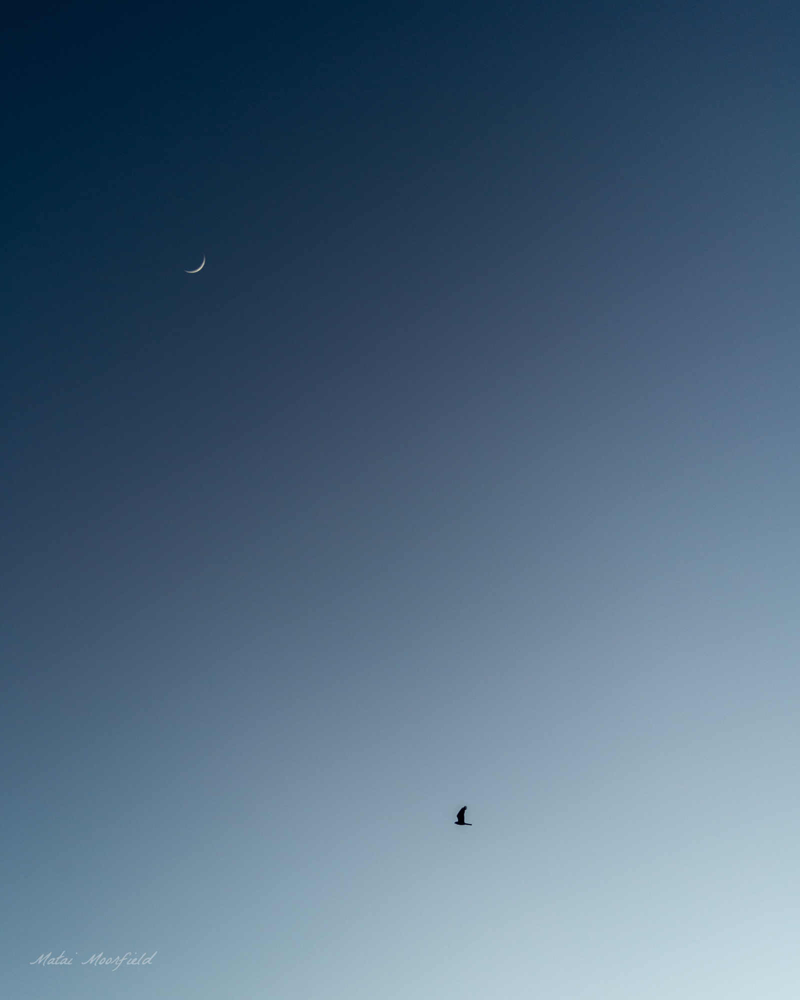
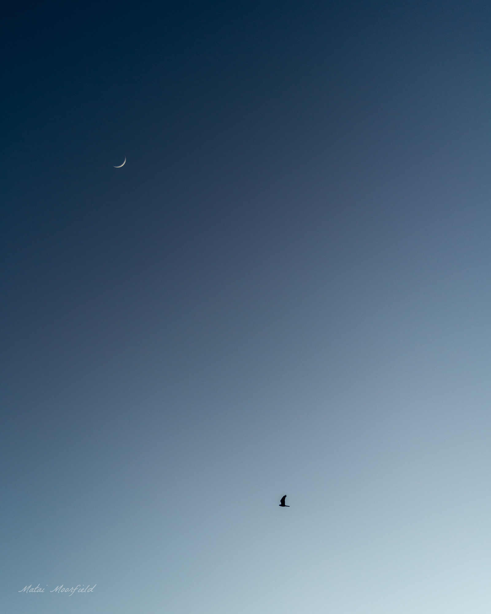

Full Gallery
Waders


New Zealand White Heron (Kōtuku). This species of native heron is classified as "Nationally Critical" due to its staggering low population of 100-120 throughout New Zealand.


Frogs


Shorebirds


 eating a dead rabbit bird photo")


Forest birds


Fine Art


Abstract

 



© 2025 Matai Moorfield. All rights reserved.
All photographs on this website are protected by copyright and are the property of Matai Moorfield. Unauthorised use, reproduction, or distribution of these images is strictly prohibited. For inquiries regarding licensing, please contact matai@moorfield.co.nz